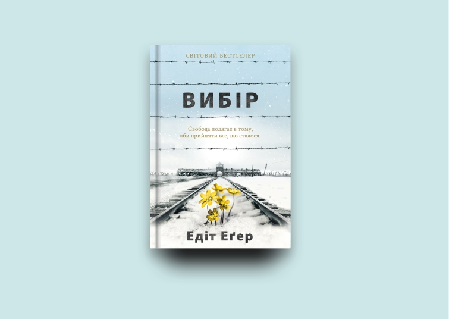
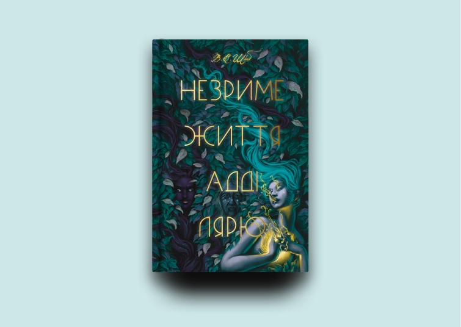
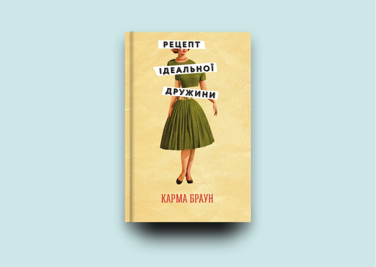
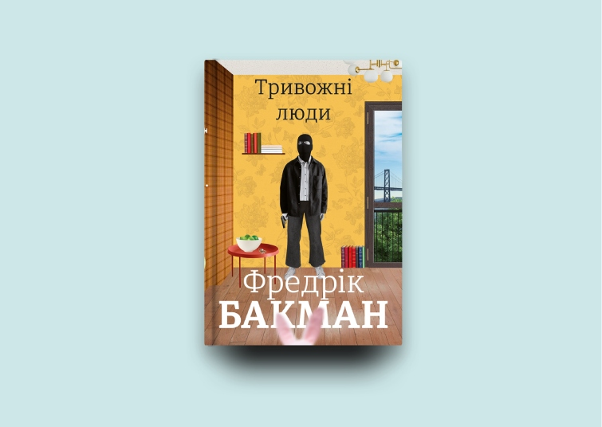

У світі відкривається новий книжковий сезон, організовують міжнародні та національні книжкові ярмарки. А в Україні за час війни для книговидавців дуже цінно те, що відкриваються книгарні й українці повертаються до книжок і читання.
Виокремиvj п’ять найпопулярніших видань. Тут фентезі, психологія, сучасний роман та ілюстровані видання про Україну та українців.
"Вибір", Едіт Еґер
Книжки докторки Едіт Еґер зовсім по-іншому сприймаються, ніж рік тому, коли вони тільки вийшли в українському перекладі. Вони ще більш актуальні.
Авторка – психотерапевтка та вціліла в Аушвіці, у бестселері "Вибір" вона відверто описала своє життя до, під час і після війни та концтабору. Їй було важливо передати свій досвід у подоланні будь-якої психологічної травми. Щоб краще пояснити, як працює її терапія, вона розповідає історії і своїх пацієнтів, у яких досить поширені проблеми нашого часу. Натомість її травма, з якою вона жила кілька десятиліть – це синдром вцілілого.
Докторка Еґер нікому не розповідала, що вона була в Аушвіці. Одного разу вона випадково почула, як її чоловік розповідає це їхній доньці і миттєво побігла у ванну, закрилася там, відчуваючи великий сором і дику лють на чоловіка за це. Зрештою, вона впоралася зі своєю травмою, яка завдавала їй великих страждань. В кінці книжки вона пише: "Якщо я змогла, ви теж зможете". Ще одна її настанова – що б з нами сталося, ми завжди маємо вибір – бути жертвою, чи вцілілим. Її книжка "Вибір" стала світовим бестселером, через два роки вона написала другу книжку на прохання багатьох читачів.
"Незриме життя Адді Лярю", В. Е. Шваб
Фентезі було в трендах під час пандемії коронавірусу. Читачі вибирали літературу, яка б дозволила втекти від реальності, поринути в магічний світ героїв з надзвичайними силами. Книжка Вікторії Шваб "Незриме життя Адді Лярю" вийшла за день до початку війни в Україні. І як тільки відновила роботу наша онлайн-крамничка, до нас прийшли саме за цієї книжкою.
Історія дуже захоплююча. Головна героїня підписала фаустівську угоду. Вона отримала вічне життя, але є один момент. Її ніхто не пам’ятатиме, як тільки попрощається з нею. Адді Лярю століттями живе з цим прокляттям, шукаючи різних способів, щоб його позбутися. Єдиний, хто її відвідує – зеленоокий демон, він з’являється раз на рік, у день укладання угоди. Але ось вона опинилася у сучасному Нью-Йорку і раптом її впізнає працівник книгарні. Окрім містики, любовних історій, тут багато цікавого про мистецтво.
"Рецепт ідеальної дружини", Карма Браун
Популярна література це також те, що відволікає, і тому й на неї є попит. У "Рецепті ідеальної дружини" розповідаються історії двох жінок, які у якийсь момент перетинаються. Еліс переїжджає з чоловіком із Нью-Йорка до тихого передмістя. У неї не все гаразд у шлюбі.
Вона намагається розпочати нову діяльність, нове життя, почувається розгубленою і самотньою. Та одного дня вона знаходить кулінарну книгу попередньої господині цього будинку, яка жила тут у 50-х роках і яка окрім рецептів страв, записувала туди свої нотатки щодо подружніх проблем. Для Еліс вони стали підтримкою, а згодом вона у них знайшла вирішення і своєї проблемної ситуації. Історія про боротьбу жінок за свої права.
"Тривожні люди", Фредрік Бакман
Фредрік Бакман перерахував 50 тисяч шведських крон для українських біженців, але це не єдина допомога. Його книжки стали для багатьох українців підтримкою. Всі книжки цього автора під час війни користуються попитом, але найчастіше замовляють "Тривожних людей". Попри назву, це дуже позитивна, смішна та емоційна книжка. Тут багато емпатії, те, чого так особливо потребують українці. Це і комедія, але є тут щось і від психологічного роману.
Усе почалося з невдалого пограбування банку. Грабіжник не тільки залишився без грошей, а ще й зайшов не в ті двері, довелося взяти в заручники восьмеро людей. Вони всі оглядали квартиру, яку виставили на продаж. В одному приміщенні опинилися подружжя пенсіонерів, старенька бабуся, молода пара, яка очікує на дитину, директорка банку, агентка з нерухомості і ще дехто там заховався. В цю історію залучені двоє поліцейських, які намагаються розв’язати проблему цих людей, а, можливо, свою власну. Усе це дуже тривожні люди, але коли їх взяли в заручники, це не налякало жодного з них. Історія про взаємопідтримку і порозуміння.
"Книга-мандрівка "Україна" і "Ці дивовижні українці"
У такий переломний момент у багатьох українців виникає бажання перечитувати історію нашої країни, дізнатися якомога більше про те, чим Україна особлива, які визначні події тут відбувалися, про українські міста. Тому не дивно, що книга-мандрівка "Україна" така популярна. Вона вийшла кілька років тому, отримала престижні книжкові нагороди, була представлена на багатьох міжнародних книжкових ярмарках, але зараз особливо актуальна. У цій книжці – 1200 захоплюючих фактів про Україну та українців: про унікальні місця, культурну спадщину, видатних персон та про події, які змінювати хід історії нашої країни.
"Ці дивовижні українці" – це ілюстрована новинка воєнного часу і вона доповнює попереднє видання та дає ще більше цікавої інформації про українські традиції та прадавні символи, про українську кухню та український одяг, про здобутки давніх предків у сільському господарстві та сучасні винаходи, про науку та спорт.